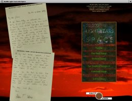
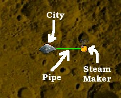
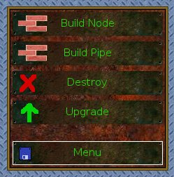
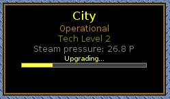
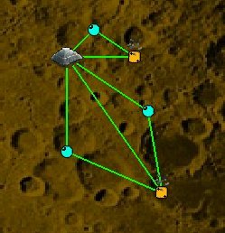

|  |
| Figure 1. Main menu screen. |
The objective of "20,000 Light Years Into Space" is to upgrade a City to a particular technology level. The City requires steam: and every upgrade will increase the requirement. The level you must reach is dependant upon the difficulty level of your game.
If the City runs out of steam before you can reach the required technology level, you lose the game. Therefore, you must built a network to carry steam to the City.
The links of the network are Pipes, and the connection points are called Nodes. If you build a connection point over a source of steam, it is a Steam Maker. It adds steam to your network. Other types of Node just route steam (and also store it, in small quantities).
The easiest way to learn the game is to play the Tutorial. The Tutorial is interactive, and takes you through the things you need to know in order to get started. However, if you prefer a traditional manual, read on...
I recommend that you initially play the game in a window. When the game is running in a window, you'll be able to refer to these instructions as you play. Click 'Fullscreen Mode' on the main menu if the game is not running in a window. Then, start the game by clicking 'Play New Game', then 'Beginner'. You can press Escape or click 'Menu' to pause the game at any time. When the in-game menu is on screen, the game is paused.
|  |
| Figure 2. The City, a Pipe, and a Steam Maker. |
When the game begins, your City already has one source of steam, a short distance to the east (as illustrated). That is enough for the moment, but you won't be able to upgrade the City very far without adding more sources. Click "Build Node" (as in Figure 3) and then click on one of the animated steam sources that you can see on the map. Choose one that is near to the City. An orange Steam Maker will appear over the source.
|  |
| Figure 3. Game controls. |
Next, select "Build Pipe", and click first on the City, and then click on the new Steam Maker. A red Pipe will appear between the two. The Pipe is red because it is not fully built: but building work will start immediately. Shortly, the Pipe will turn green: it has now been built, and is ready to route steam. You'll see the steam pressure increase if you click on the City or the new Steam Maker.
However, there isn't any steam to route, yet. The Steam Maker also needs to be built. That takes longer - all types of Node take a while to build. You can click on the Steam Maker to watch the progress of the construction.
|  |
| Figure 4. Upgrade in progress. |
When your city is selected, you'll see information about the upgrade in a window on the right-hand side. This is illustrated in Figure 4.
As soon as the upgrade begins, the city will require more steam. You'll also get an extra work unit. Work units are used to build, repair and upgrade Nodes, Pipes, Steam Makers and also the City. Work units represent a capability to carry out work simultaneously: if you have 3 work units, then you can build, repair or upgrade up to 3 items at the same time. If more than 3 items need work, then they will wait in a queue. Understanding the queue is an important part of tactical play - see Hints and Tips if you want to know the answer!
While your upgrade is running, you can expand your network. But first, you should strengthen it. You are about to be attacked by hostile forces! Mysterious aliens are present: they understand your network, and they will try to destroy the weakest points. There is one way to avoid this. You must build additional routes for the steam.
|  |
| Figure 5. Primary and secondary routes. |
Figure 5 illustrates an example of this. There are two primary routes for the steam, directly linking the Steam Makers to the City. But there are also three secondary routes, carrying steam through three Nodes. If the primary routes are damaged or destroyed, the secondary routes will be used.
You don't have to do anything special to designate routes as primary or secondary - the steam moves automatically, following the path of least resistance.
For most of the game, you'll have to deal with attacks from aliens, sandstorms, and quakes. Only the early stage of the game is "quiet". You need to be ready to rebuild anything that gets destroyed.
The end goal is to reach a particular technology level at the City. But you can't upgrade the city unless you also obtain more steam. There are three basic strategies for obtaining more steam.
The safest option combines the three. You will always want to ensure that your network is resilient to the various types of attack. An upgraded City will provide you with lots of Work Units, allowing you to build and repair at high speed, but it will also require a great deal of steam. You can lose the game very quickly if supplies are interrupted! Monitor the City's steam usage and steam pressure closely.
You may wish to look at the Hints and Tips if you keep on losing the game.